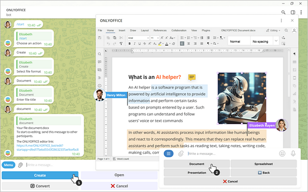
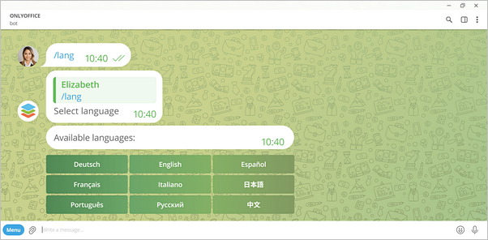
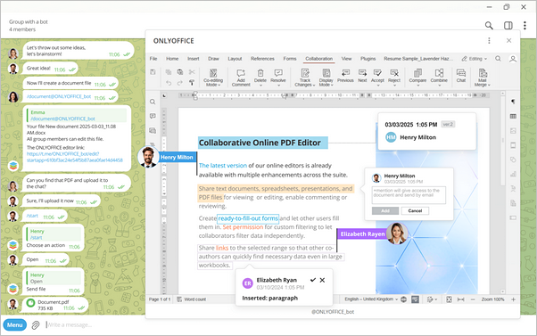

Kommunikation während der Bearbeitung
In der ONLYOFFICE Tabellenkalkulation können Sie immer mit Kollegen in Kontakt bleiben und beliebte Online-Messenger wie Telegram und Rainbow nutzen.
Telegram-Bot
Um ONLYOFFICE mit Telegram zu verbinden,
-
Folgen Sie dem Installationslink und klicken Sie auf die Schaltfläche START.
Wenn Sie den Bot das nächste Mal starten, verwenden Sie einfach den Befehl
/start, um auf das Startmenü mit den verfügbaren Optionen zuzugreifen. -
Um Dateien zu erstellen und zu bearbeiten:

- Klicken Sie im Menü auf die Schaltfläche Erstellen.
- Wählen Sie das gewünschte Dateiformat: Dokument, Tabellenkalkulation oder Präsentation.
- Geben Sie den Dateinamen ein.
- Der Bot sendet eine Nachricht mit einem Link zur erstellten Datei. Klicken Sie auf den Link, um die Datei im entsprechenden ONLYOFFICE-Editor zu öffnen (abhängig vom gewählten Dateityp).
-
Sobald die Bearbeitungssitzung abgeschlossen ist, sendet der Bot die Datei mit den gespeicherten Änderungen.
Der Bearbeitungslink wird deaktiviert, sobald die geänderte Datei gesendet wurde. Um die Datei erneut zu öffnen, antworten Sie einfach auf die Nachricht, die die Datei enthält, mit einem beliebigen Text.
-
Um an Dateien zusammenzuarbeiten:
- Um die erstellte Datei gemeinsam zu bearbeiten, leiten Sie die Nachricht mit dem Link an andere Telegram-Benutzer weiter.
- Der Link bleibt 24 Stunden lang aktiv. Jedes Mal, wenn jemand innerhalb dieses Zeitraums darauf klickt, wird der Timer um weitere 24 Stunden zurückgesetzt.
- Wenn der Link abgelaufen ist, wird eine Fehlermeldung angezeigt. Sobald alle Teilnehmer, die auf den Link zugegriffen haben, den Editor geschlossen haben, wird die aktualisierte Datei (sofern Änderungen vorgenommen wurden) sofort an alle Beteiligten gesendet.
-
Um eine lokale Datei zu öffnen:
- Senden Sie eine Datei an den Chat, ohne einen Befehl auszuwählen.
-
Wählen Sie die folgenden Optionen über das Bot-Menü:
/start→ Öffnen → Datei vom Gerät hochladen.In beiden Fällen sendet der Bot eine Nachricht mit dem zu öffnenden Link.
Wenn Sie mehrere Dateien in einer Nachricht senden, wird der Link für die erste Datei in der Nachricht generiert.
-
Um eine Datei zu konvertieren:
- Wählen Sie die folgenden Optionen über das Bot-Menü:
/start→ Konvertieren. - Senden Sie die Datei von Ihrem Gerät an den Bot.
-
Wählen Sie das Format, in das die hochgeladene Datei konvertiert werden soll. Die Liste der unterstützten Formate finden Sie auf der GitHub-Seite.
Nach Abschluss sendet der Bot die konvertierte Datei direkt im ausgewählten Format an den Chat.
- Wählen Sie die folgenden Optionen über das Bot-Menü:
- Um Hinweise zur Arbeit mit dem Bot zu erhalten, verwenden Sie den Befehl
/help.
Verwendung des Telegram-Bots in Gruppenchats
Die Funktionalität des Bots unterscheidet sich bei der Verwendung in einer Gruppe im Vergleich zu Einzelgesprächen:
- Die Dateierstellung wird über drei Befehle verwaltet:
/document,/spreadsheetund/presentation. Benutzer legen den Dateinamen nicht manuell fest. Stattdessen wird er automatisch anhand der Vorlage generiert:Neu [Format] Datum Uhrzeit UTC. - Die Bot-Interaktion variiert je nach Administratorrechten. Ohne Administratorrechte müssen Sie direkt auf den Bot antworten, und er kann weitergeleitete Dateinachrichten (außer seinen eigenen) nicht abrufen. Mit Administratorrechten sieht der Bot alle Nachrichten, sodass Sie Dateien weiterleiten können, ohne direkt zu antworten.
- Um einen Editor-Link für eine Datei neu zu generieren, antworten Sie auf die Nachricht, die die Datei enthält, und markieren Sie den Bot
@ONLYOFFICE_bot. In einigen Fällen benötigt der Bot möglicherweise Administratorzugriffsrechte in der Gruppe. - Beim Öffnen von Dateien reagiert der Bot nicht auf Dateien, die einfach in den Chat gesendet werden. Um eine Datei zu öffnen, verwenden Sie den Befehl
/openund antworten Sie dem Bot mit der angehängten Datei in einer Antwortnachricht. -
Die Sprache des Bots kann nicht universell für die Gruppe festgelegt werden. Stattdessen antwortet er in der Sprache, die jeder einzelne Benutzer gewählt hat.
Standardmäßig verwendet der ONLYOFFICE-Bot die Sprache des Telegram-Benutzerprofils. Wenn diese Sprache in den Bot-Übersetzungen nicht verfügbar ist, wird Englisch verwendet. Wenn Sie die Bot-Sprache manuell ändern möchten, geben Sie den Befehl
/langein.
- Die Dateikonvertierung ist nicht verfügbar.
